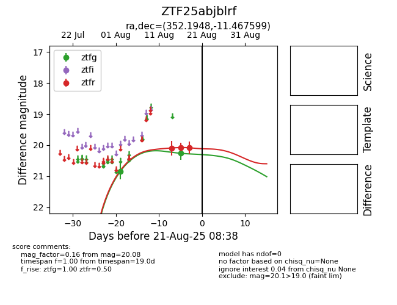

Target ZTF25abjblrf at 2025-08-21 08:38, see:
FINK: fink-portal.org/ZTF25abjblrf
Lasair: lasair-ztf.lsst.ac.uk/objects/ZTF25abjblrf
ALeRCE: alerce.online/object/ZTF25abjblrf
alt names
ZTF25abjblrf (ztf,alerce)
coordinates:
equatorial (ra, dec) = (352.1948,-11.46760)
galactic (l, b) = (67.8228,-65.06143)
photometry
last ztfg=20.26, ztfr=20.08
2 ztfg, 3 ztfr detections
